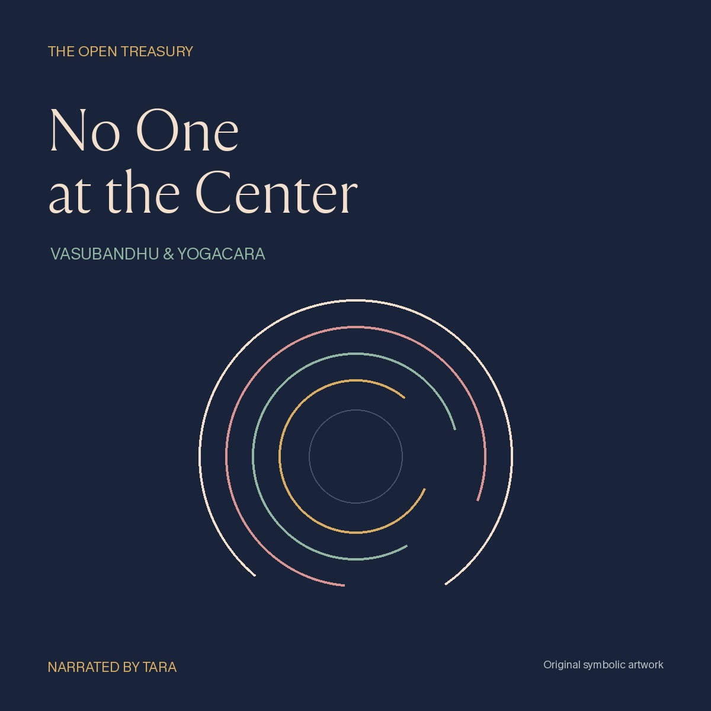

No One at the Center
Vasubandhu and the World That Mind Makes
A 21-chapter, 55-minute course through Vasubandhu and the Yogacara world: Abhidharma, self and continuity, karma, seeds, consciousness, three natures, other minds, transformation, and the disputes that keep the tradition alive.
Moving visual edition
Watch or download the original 720p symbolic animation
Chapters
- 00:00 - A world in four words
- 02:27 - The person behind the legend
- 04:58 - The intellectual city
- 07:27 - The Treasury is a tool
- 10:01 - A life without a proprietor
- 12:39 - The moment that cannot stay
- 15:13 - The vow after the ceremony
- 17:49 - No single author of everything
- 20:19 - The brother and the wider vow
- 22:48 - The missing interval
- 25:17 - Eight ways a world happens
- 28:03 - Seeds without a warehouse
- 30:36 - The case against the obvious
- 33:14 - The atom with a side
- 35:47 - The three natures of a quarrel
- 39:10 - Do other people survive?
- 41:41 - What does mind-only mean?
- 44:18 - Reading against the letter
- 46:43 - Changing the basis
- 49:32 - Does awakening lose the world?
- 52:10 - The world after him
Read alongside the course
Source companion PDF
Detailed sources and reading limits
Complete spoken script
Rights, narration and review
This is original educational commentary, not a translation or an authorized presentation by a Buddhist lineage. It is not initiation, pointing-out instruction, attainment certification, therapy, or medical advice. Traditional stories, philosophical reconstructions, modern illustrations, and disputed interpretations are distinguished in the narration. No claim that this route covers every surviving work or settles disagreements among Yogacara interpreters.
Narrated by Tara, an AI voice (Aoede). Sanskrit and Tibetan names are approximate and have not been certified by a native speaker. All 42 full clips were compared with the frozen manuscript using automated transcripts. Suspicious passages received additional independent recognition checks. Clip 06 was replaced by a complete fresh take; no words were patched into the recording. All 41 assembled boundaries received transcript and signal checks. This is not a claim of full human-ear listening. Small pronunciation or delivery defects may remain.
The final podcast is 55:31, 128 kbps MP3. Measured delivery loudness: -17.9 LUFS, true peak -1.5 dBTP. Fixed gain and transparent peak limiting only, with technical limiter-delay compensation. No speed, pitch, EQ, or wording edits. Untouched originals, the unused first take of clip 06, the complete replacement, and lossless delivery audio are preserved privately.
Visuals are 21 original symbolic moving designs. No historical likenesses, borrowed artwork, music, footage, or third-party recordings. The 720p, 8fps video uses the course soundtrack. Actual encoded frames from every chapter and motion in every chapter were checked. The complete video was decoded for errors.
Original commentary, synthetic narration, and original visual art are dedicated to CC0. This dedication does not extend to the underlying historical texts, third-party translations, source publications, trademarks, or externally linked material. No third-party translation is read aloud. In particular, the publisher's 2022 Thirty Verses translation was consulted for research, not reproduced or adapted as narrated translation. It retains its CC BY-NC-ND terms. See sources-public.md and the source companion for the exact reading limits and source roles.
Free without ads, paid access, sponsorship, or support solicitation.
Got a question? Ask Tara - the best listener questions become short answer episodes.